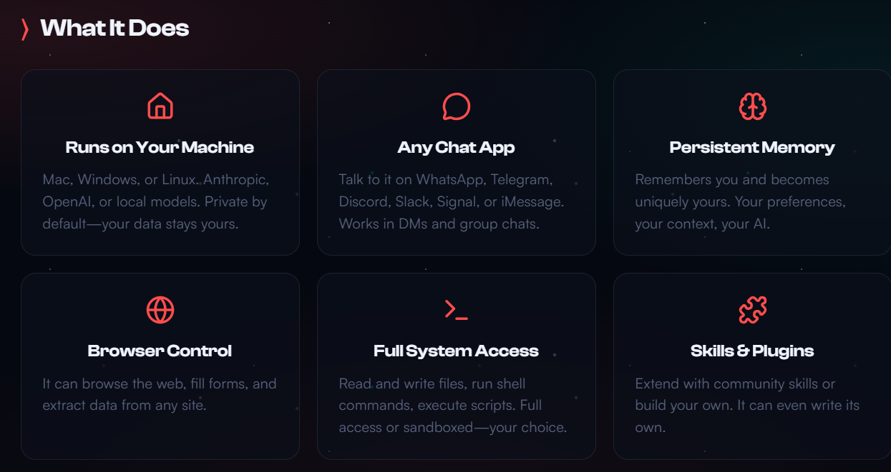

What OpenClaw is
OpenClaw is a platform that focuses on AI. It provides services designed to help people do repetitive tasks, analyze data, and integrate AI models into daily life. The project aims to make AI more approacable and useful for almost any task, such as drafting emails to coding AI's too. Openclaw also is an autonomous multi-agent framework that you can attach to any LLM( large language model) agentic tasks on behalf of the user.
What it does
The platform offers a chatbot that you can ask literally anything and produce outputs that make decisions faster for people. But it isn't like any other chat bot, imagine it like this, its a worker powered by a LLM such as Claude or gpt. The worker though can access your computer and do tasks for you such as drafting emails like mentioned before. This AI basically super speeds daily tasks for you and can run as a local cloud. The downside to this is that if you give it too much control it can start to doing crazy things like deleting all your email or using your credit card for random things if you give access. The AI is meant to be used as a tool to speed up processes. Openclaw is still developing and if you do decide to use it be careful and look at online guides on how to.
Quick summary
- Ai model that uses LLM to do various tasks.
- local model that you can use for free.
- speeds up daily tasks by doing them for you.
Note
The platform is useful for students and developers who want to learn how to combine automation with machine learning. The platform is intended to be used as a tool for learning and experimentation and should not be used for schoolwork because it is considered a violation of school code and I aint tryna get in trouble yo.

MORE things it can do
Further information
For more information, visit the official site: openclaw.ai. The site contains more stuff about Openclaw.